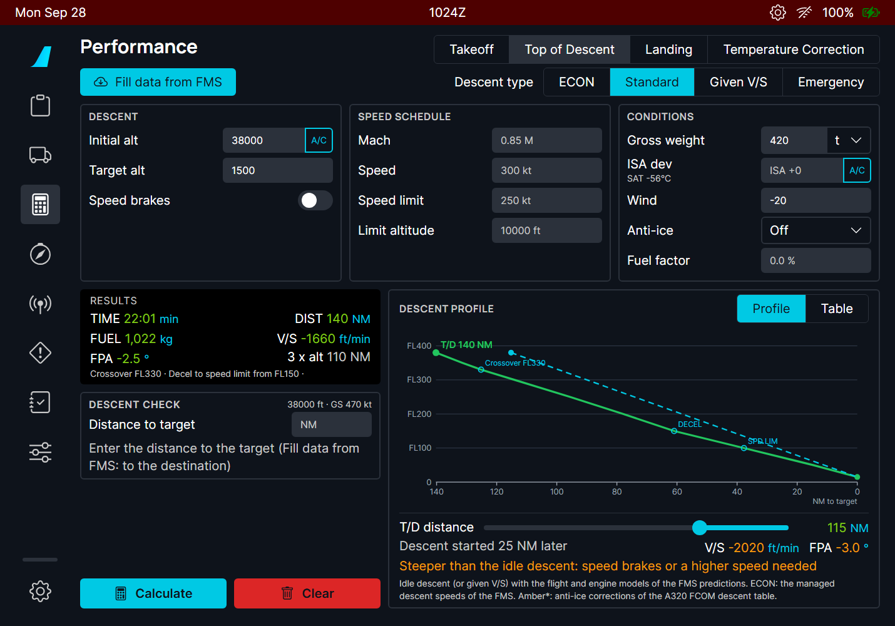
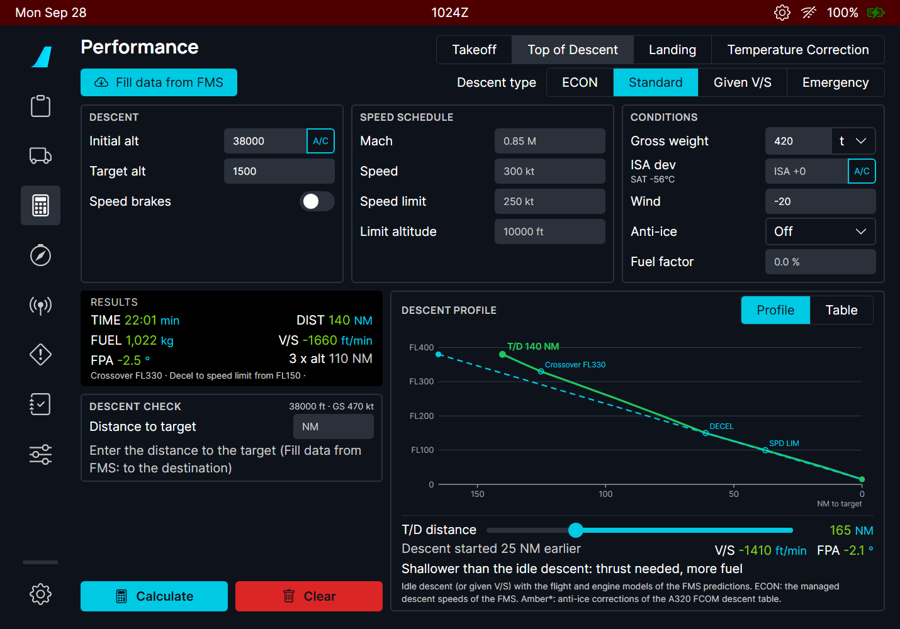

Before each takeoff the crew needs the takeoff weight limit of the runway, the FLEX temperature (reduced thrust), the speeds V1, VR, V2 and the flaps. On the real A380 they come from the OIS takeoff application or from the airline (company takeoff data, sent to the FMS by datalink). The flyPad calculator does the computation; SEND TO FMS plays the airline: the MFD receives the data as company T.O data, and the crew checks and inserts it, as in FCOM DSC-22-FMS-20-30.
| Part | Contents |
|---|---|
| Airport, Fill data from | ICAO code; imports from the FMS (departure, runway, TOW, CG, THR RED / ACCEL), the OFP (SimBrief) or the METAR (wind, OAT, QNH). |
| RUNWAY | Runway from the list (or Manual), heading, TORA, elevation, slope, and the entry angle (90° or 180° turn onto the runway, or 0° when rolling straight on: it sets the line-up distance lost). |
| CONDITIONS | Runway condition, wind, OAT, QNH, anti-ice, packs. |
| AIRCRAFT | TOW in t (or klb), one decimal, T.O CG in % MAC, flaps (CONF 1+F, 2, 3 or OPT = the best one), thrust (TOGA or FLEX). |
| DEPARTURE | THR RED, ACCEL, EO ACCEL altitudes (they default to the elevation + 1500 ft), and the noise abatement procedure (NOISE END altitude, speed, N1). |
| RESULTS | The results in the layout of the OIS takeoff application (FCOM PER-TOF-TOR-SRS). |
| TAKEOFF RUN | The runway with the V1, VR and 35 ft points, the required distance and the margin, for TOGA or any FLEX temperature of the allowed range. |

| Line | Meaning |
|---|---|
| TOW / MTOW(perf) | Your takeoff weight, and the maximum the runway and conditions allow at TOGA. |
| V1, VR, V2 | The takeoff speeds. V2 is at least 1.13 VS1G and 1.10 VMCA, VR at least 1.05 VMCA, V1 at least VMCG (FCOM PER-TOF-TOR-SRS). |
| MARGIN | Runway left beyond the required distance. |
| FLEX / TOGA | The FLEX temperature, or TOGA. |
| FLAPS, T.O CG, T.O SHIFT | The configuration, the CG entered, the takeoff shift (distance lost at line-up or an intersection). |
| THR RED, ACCEL, EO ACCEL | The altitudes of the DEPARTURE section. |
The TAKEOFF RUN panel lets you look at the run for TOGA, or for any FLEX temperature between the OAT and the maximum (FCOM PER-TOF-THR-FLX). Use - / + or the slider; the speeds and the run follow.


Send to FMS sends the thrust selected for the takeoff run only (TOGA, or FLEX at its temperature), with its own speeds.


When the takeoff is not possible, a message says why and there is no result:


| Message | Meaning |
|---|---|
| Beyond Takeoff Weight Limit - Max ... | TOW above the runway limit: reduce the weight or use another runway. |
| CG Outside Takeoff Envelope | The CG is outside the A380 takeoff CG envelope for this weight. |
| Above Structural MTOW | TOW above 510 t. |
| Only dry runways are covered... | The A380 data has no wet or contaminated takeoff. |
| Runway shorter than the A380 performance data (1700 m) | The charts start at 1700 m. |
| Above Maximum Tailwind / OAT / Pressure Altitude | Outside the A380 limits (FCOM LIM-12). |
| Flex Not Possible | No FLEX temperature is possible at this weight: take off at TOGA. |
The MFD PERF T.O page gets two buttons: CPNY T.O REQUEST (ask the airline) and, once data has arrived, RECEIVED CPNY T.O.


| Situation | What you should see |
|---|---|
| Inputs missing | Amber labels; Calculate stays dim. |
| Calculate with valid inputs | RESULTS and the takeoff run; FLEX at its maximum by default. |
| TOW too high, CG out of envelope, wet runway... | A message with the reason; no result. |
| Send to FMS with a runway from the list | "Takeoff data sent to the FMS: RECEIVED CPNY T.O on the PERF page"; the MFD shows the data a moment later. |
| Send to FMS with a manual runway | Nothing is sent: the FMS needs the runway ident. |
| RECEIVED page, other runway than the flight plan | Runway in amber; INSERT not available. |
| INSERT | PERF T.O filled; THS FOR still to enter. |
| Limitation | Why | What to do |
|---|---|---|
| Dry runways only. | The only public A380 takeoff data is the takeoff weight charts of the Airbus A380 Aircraft Characteristics (dry, ISA and ISA+15, runway 1700-5100 m, altitude 0-8000 ft). | On a wet runway, use the dry result with extra margin, as a training estimate only. |
| Speeds, FLEX, wind, slope and temperature effects are estimates (amber *). | The charts give weights only. The rest is a model fitted on them and checked on the FCOM examples (FLEX 38 at 560 t / 614 t). | - |
| The run distances (V1, VR, 35 ft points) are all-engine estimates. | No A380 distance data is public. | - |
| Send to FMS needs a runway from the list. | The FMS checks the uplink against its departure runway. | Choose the runway in the list. |
| Not certified data. | For simulation and training. | - |
| # | Do this | Expected result |
|---|---|---|
| 1 | A380X on the ground, ADIRS aligned. MFD: flight plan with a departure runway, FUEL&LOAD filled. Open flyPad > Performance > Takeoff. | Empty screen: amber labels on the missing inputs, Calculate dim. |
| 2 | Choose FMS in Fill data from and press it, then METAR. | Airport, runway, TOW (in t, one decimal), CG, THR RED / ACCEL filled; wind, OAT and QNH from the METAR. |
| 3 | Press Calculate. | RESULTS: TOW, MTOW(perf), V1 / VR / V2, FLEX (or TOGA), flaps; chart values green, estimates amber with a star; TAKEOFF RUN with the V1 / VR / 35 ft marks and the margin. |
| 4 | On a long runway (e.g. 4000 m near sea level, 15 °C), type TOW 510.0 t with T.O CG 35.75 %, then 43 %, and Calculate each time. | Both accepted (envelope edges included). |
| 5 | T.O CG 35.7 % at 510 t; then 43.5 % at 400 t. | Message "CG Outside Takeoff Envelope", no result, each time. |
| 6 | Set the runway condition to Wet and Calculate. | Message that only dry runways are covered; no result. |
| 7 | Back to dry. In TAKEOFF RUN press TOGA, then FLEX and move the slider. | The run, the speeds and the margin follow; the FLEX range runs from the OAT up to the maximum. |
| 8 | Press Send to FMS. | Toast "Takeoff data sent to the FMS: RECEIVED CPNY T.O on the PERF page". After the transit time of the Company Datalink Reply Time setting (Real: 5 to 15 s), the MFD shows COMPANY T.O DATA RECEIVED WAITING FOR INSERTION and the RECEIVED CPNY T.O button on PERF T.O. |
| 9 | MFD PERF T.O > RECEIVED CPNY T.O > INSERT. | PERF T.O gets the speeds, flaps, thrust, T.O shift, THR RED / ACCEL / EO ACCEL (and the noise data when sent); THS FOR stays empty. |
| 10 | Change the FMS departure runway, then Send to FMS again. | flyPad warning about the runway; on the RECEIVED page the runway is amber and INSERT is not available. |
| 11 | PERF T.O > CPNY T.O REQUEST > SEND T.O REQUEST, and send nothing from the flyPad. | REQUEST PENDING..., then NO COMPANY REPLY after 4 minutes. |
The A320 takeoff speeds, FLEX temperature and THS come from the airline or the crew's own tool. Here the flyPad computes them with the FlyByWire A320neo performance model (built from Airbus data) and sends them to the FMGC as an uplink takeoff data message, which the crew inserts from the MCDU PERF TAKE OFF page as on the real aircraft.
The screen is the one of the A380 (see "A380 takeoff calculator and company T.O data" above) with these A320 differences:


There is no INSERT UPLINK prompt in these pictures because the harness FMGC has no flight plan. The prompt appears only when the uplink is complete (V1 and VR present) and the checks below pass.

| MCDU message | Meaning |
|---|---|
| TAKEOFF DATA UPLINK | Uplink takeoff data received. |
| INVALID TAKEOFF UPLINK | The uplink is not valid (missing data). |
| REQUEST IS PENDING | A request was sent and has no answer yet. |
| NO ANSWER TO REQUEST | No answer 4 minutes after the request. |
PERF TAKE OFF also gets the TO SHIFT field (1 m up to the runway length, CLR to delete): the distance lost when taking off from an intersection.
| Situation | What you should see |
|---|---|
| Send to FMS with a runway from the list | Success message; TAKEOFF DATA UPLINK on the MCDU. |
| Send to FMS with a manual runway | Nothing is sent: choose the runway in the list. |
| FMGC departure runway differs | flyPad warning; no INSERT UPLINK on the MCDU. |
| FMGC TOW differs by more than -1 t / +3 t | flyPad warning "INSERT UPLINK needs a TOW within -1 t / +3 t"; no INSERT UPLINK. |
| No TOW in the FMGC | flyPad warning "No TOW in the FMS (INIT B: ZFW and BLOCK)": fill INIT B first. |
| INSERT UPLINK | PERF TAKE OFF filled with the uplink. |
| Limitation | Why | What to do |
|---|---|---|
| Only the thrust selected for the takeoff run is sent. | The airline sends what the crew asked for; the MCDU holds MAX and FLEX pages, the flyPad fills the one you use. | Select TOGA or FLEX before sending. |
| V1 = VR = V2 at light weights. | The FlyByWire A320 model (upstream). | Check against your own tools. |
| No real airline datalink. | The flyPad plays the airline. | - |
| # | Do this | Expected result |
|---|---|---|
| 1 | A32NX on the ground. MCDU: flight plan with a departure runway, INIT B ZFW and BLOCK. flyPad > Performance > Takeoff, runway from the list, conditions, TOW, Calculate. | RESULTS in green (FBW A320 model); THS shown when the T.O CG is below 27 %. |
| 2 | Press Send to FMS. | Toast "Takeoff data sent to the FMS: MCDU PERF TAKE OFF, UPLINK TO DATA, RECEIVED TO DATA"; MCDU scratchpad TAKEOFF DATA UPLINK. |
| 3 | MCDU PERF TAKE OFF > <TO DATA (6L) > RECEIVED <TO DATA (6L). | UPLINK MAX TO DATA (or FLX TO DATA with 4R): V1 / VR / V2 and their labels in column 11, not over the left labels. |
| 4 | Press INSERT UPLINK. | PERF TAKE OFF filled: V1, VR, V2, FLAPS/THS, FLEX TO TEMP (cleared for MAX), THR RED/ACC, ENG OUT ACC, TO SHIFT. |
| 5 | Change the INIT B block so that the TOW differs by more than +3 t, then Send to FMS again. | flyPad warning "INSERT UPLINK needs a TOW within -1 t / +3 t"; no INSERT UPLINK prompt. |
| 6 | Clear INIT B and send again. | flyPad warning "No TOW in the FMS (INIT B: ZFW and BLOCK)". |
| 7 | Choose a Manual runway on the flyPad and press Send to FMS. | Nothing is sent: the runway must come from the list. |
On the A380 the flight plan, the winds and the takeoff data come from the airline by datalink (FCOM DSC-22-FMS-10-40-90). A request takes time: the button shows REQUEST PENDING... until the answer, and NO COMPANY REPLY appears when nothing comes within 4 minutes. FBW answered instantly; now the answer arrives after a reply time you choose.

| Setting | Answer to a request | Message sent without a request (e.g. SEND TO FMS) |
|---|---|---|
| Instant | immediately | immediately |
| Fast | 5 to 15 s | 1 to 3 s |
| Real (default) | 60 to 120 s | 5 to 15 s |
Airbus gives no figure: these are typical airline values, below the 4 minute limit of the FCOM.


| Situation | What you should see |
|---|---|
| Real, request sent | REQUEST PENDING... for one to two minutes, then the data. |
| Instant | The data at once, as before this change. |
| A second request while one is pending | Not possible: the button stays REQUEST PENDING.... |
| No answer | NO COMPANY REPLY after 4 minutes. |
| No Navigraph user / SimBrief ID | NO NAVIGRAPH USER; nothing is sent. |
| Limitation | Why | What to do |
|---|---|---|
| The reply times are typical values. | Airbus publishes no figure for the airline answer. | Choose Fast or Instant if you prefer. |
| The A32NX MCDU uplink stays instant. | This change is for the A380 FMS; the A320 uplink has its own messages. | - |
| # | Do this | Expected result |
|---|---|---|
| 1 | A380X on the ground, a SimBrief OFP available, Navigraph / SimBrief set in the flyPad. Set the reply time to Real. | Setting saved. |
| 2 | MFD INIT > CPNY F-PLN REQUEST > SEND F-PLN REQUEST. | REQUEST PENDING... (greyed) here and on INIT; the flight plan arrives 60 to 120 s later. |
| 3 | Press the request button again while it is pending. | Nothing happens: one request at a time. |
| 4 | Set Instant and request again (after clearing the plan). | The flight plan arrives at once. |
| 5 | INIT or WIND > CPNY WIND REQUEST with Real. | The winds arrive after the reply time. |
| 6 | Disconnect the network (or no OFP) and send a F-PLN request. | NO COMPANY REPLY after 4 minutes. |
| 7 | Remove the Navigraph user / SimBrief ID and press CPNY F-PLN REQUEST. | NO NAVIGRAPH USER; nothing is sent. |
Before the descent, the crew checks that the aircraft can land on the planned runway: the landing distance for the runway condition and braking, the margin left, the approach speed VAPP and the go-around performance. On the real A380 this is the LDG PERF application of the OIS (FCOM PER-LND); on the A320 it is the QRH (in flight) and the FCOM tables (dispatch). This page does both, with the data of each aircraft.
| Part | Contents |
|---|---|
| Airport, Fill data from | The ICAO code; Fill data from imports the data from the FMS (A380 FMC / A320 MCDU), the OFP (SimBrief) or the METAR. |
| Computation | DISPATCH or IN-FLIGHT. |
| RUNWAY | Runway from the list (or Manual), heading, landing distance available (LDA), elevation, slope, and on the A380 the go-around altitude. |
| CONDITIONS | Runway condition, wind (direction/speed), OAT, QNH; on the A380 the anti-ice and air conditioning (they change the go-around gradient). |
| AIRCRAFT | Landing weight (MLW button = the maximum landing weight), landing configuration, and on the A380 the approach type, the required go-around gradient and the VLS increment. |
| LANDING | Manual landing or autoland, braking mode, reverse thrust, and on the A320 the overweight procedure. |
| RESULTS | The results in the OIS layout (below). |
| LANDING ROLL | A picture of the runway with the touchdown, the stop point of each braking mode, the stop margin, and on the A380 the BTV lines and the runway exits. |


| Line | Meaning |
|---|---|
| LW | The landing weight used. |
| MLW(perf) | The highest landing weight the runway and the go-around allow: the lower of the weight whose landing distance just fits the LDA and the weight that still gives the required go-around gradient. It is a performance limit, not the structural maximum landing weight (395 t on the A380): it can be above it. Above the structural MLW the page shows OVERWEIGHT LANDING. |
| LIMITATION CODE | WGT: your weight is below MLW(perf), nothing limits you. LDA (red): the landing distance limits the weight. ACG: the go-around gradient limits it. |
| FLAPS | The landing configuration used (with AUTO CONF: the one the page chose). |
| LDG DIST / REG LDG DIST | In flight: the actual landing distance for the braking mode. Dispatch: the required (regulatory) distance. |
| STOP MARGIN | LDA minus the landing distance. Negative (red): the aircraft does not stop on the runway. |
| GA SPEED, GA GRADIENT | The go-around speed and the climb gradient of the go-around configuration. |
| VAPP | VLS of the landing configuration + the VLS increment (the wind increment, or what you enter). |
| Bottom line | The actual landing distance (ALD), the wind taken into account, the go-around configuration, and whether reverse thrust was credited. |
Colours follow the flyPad takeoff calculator: green values come from Airbus data; values in amber with a star (*) are estimates of a model fitted on that data (see Limitations).


AUTO CONF (A380, FCOM PER-LND): CONF FULL when its go-around in CONF 3 gives the required gradient, otherwise CONF 3 with a go-around in CONF 2; for an overweight landing, CONF 3 with a go-around in CONF 1+F.
The runway condition follows the runway condition codes (RWYCC): dry, wet, water and slush 1/4" or 1/2", compacted snow, ice. The crosswind limit of the condition is shown at the top of the landing roll.


On the A380, the page shows the BTV DRY and WET lines: where the aircraft stops with the BTV decelerations (FCOM DSC-32-10-30-20), from 400 m after the threshold plus 5 s of roll. When the runway comes from the list and a Navigraph account is linked, the runway exits of the airport map are drawn and rated:
| Exit | Meaning |
|---|---|
| Recommended | The first exit beyond the WET line (the FCOM SOP choice, even on a dry runway). |
| Beyond WET | Achievable wet or dry. |
| Dry only | Between the DRY and WET lines: only on a dry runway. |
| Not achievable | Before the DRY line. |
Without the runway list or the Navigraph data, the line says "Select the runway in the list for its exits". This is information for your briefing: the BTV selection itself is made on the OANS, as on the real aircraft.
DISPATCH gives the required landing distance used to check a runway before departure: the actual distance divided by 0.6 on a dry runway, ×1.15 on a wet one, and on a contaminated runway the higher of the wet value and ALD ×1.15 (A380 FCOM PER-LND). Braking is manual (the braking mode is greyed out). The orange bar is the required distance.


The A320 uses the same screen with its own data: the QRH in-flight landing distances (shown ×1.15, the QRH margin) and the FCOM dispatch tables (PER-LDG-DIS-RLD) with the autoland correction and the wet minimum. Braking modes are Manual, LO and MED; the Overweight Procedure switch applies the QRH overweight landing corrections. There is no go-around section.


| Situation | What you should see |
|---|---|
| Inputs missing | Amber labels; the Calculate button stays dim until they are filled. |
| Fill data from FMS without a flight plan | Only what the FMS has is filled; complete the rest by hand. |
| Dry or wet runway, reverse thrust on | NO REVERSE THRUST CREDIT: the FCOM gives none there. |
| Contaminated runway | Longer distances, lower crosswind limit; A380: BTV prohibited. |
| Landing weight above the MLW | OVERWEIGHT LANDING in the RESULTS; A380 AUTO CONF lands in CONF 3. |
| LW above MLW(perf) | Limitation code LDA or ACG in red; the stop margin may be negative. |
| Change of an input after Calculate | Press Calculate again. |
| Limitation | Why | What to do |
|---|---|---|
| Most A380 values are estimates (amber *). | The only public A380 landing data is the landing field length chart of the Airbus A380 Aircraft Characteristics (dry, manual, CONF FULL). The other cases use a model fitted on it (0.8 % error on the chart) and the FCOM rules. | Use the results for training and planning, not as certified data. |
| Autobrake and BTV distances are estimates. | They come from the autobrake decelerations of the FCOM, not from Airbus tables. | - |
| BTV exits need the runway from the list and a Navigraph account. | The exits come from the Navigraph airport map (the OANS data). | Choose the runway in the list; link Navigraph. |
| No BTV on the A320. | The A320 has no BTV. | - |
| The go-around gradient is calibrated on one FCOM example. | No A380 go-around tables are public. | - |
| # | Do this | Expected result |
|---|---|---|
| 1 | A380X in flight (or on the ground with the destination entered), destination and arrival runway in the flight plan, PERF APPR filled. flyPad > Performance > Landing, Fill data from FMS. | Airport, runway, landing weight, QNH, temperature, wind and configuration filled. |
| 2 | Dry runway, manual braking, Calculate. | RESULTS: LW, MLW(perf), limitation code, FLAPS, LDG DIST, STOP MARGIN, GA SPEED / GRADIENT, VAPP; the landing roll with the stop point of each braking mode. |
| 3 | Choose autobrake 3 and Calculate. | A longer LDG DIST; the stop point of mode 3 highlighted. |
| 4 | With a Navigraph account linked and the runway from the list: look under the landing roll. | The BTV DRY and WET lines and the runway exits rated (recommended = first beyond WET; dry only; not achievable). |
| 5 | Set Water 1/4", reverse thrust on, Calculate. | REVERSE THRUST CREDIT; "BTV is prohibited on a contaminated runway: use autobrake 3"; lower crosswind limit at the top of the landing roll. |
| 6 | Dry runway with reverse thrust on. | NO REVERSE THRUST CREDIT. |
| 7 | Choose DISPATCH and Calculate. | REG LDG DIST (actual / 0.6 on dry); the braking mode is greyed. |
| 8 | IN-FLIGHT, landing weight 420 t on a short wet runway. | OVERWEIGHT LANDING, limitation code LDA in red, negative stop margin when the runway is too short. |
| 9 | A32NX: same page. | Braking modes Manual, LO, MED; Overweight Procedure switch; LDG DIST x1.15 in IN-FLIGHT; no go-around section. |
The A380 can land with the Brake To Vacate (BTV) autobrake. The calculator gave the BTV DRY and WET lines and the exit advice, but BTV was not a braking mode. A380 FCOM DSC-32-20-220: the BTV landing distance is the BTV DRY line on a dry runway and the BTV WET line on a wet one (autoland plus autobrake distances until an exit is selected). BTV is now the last entry of the Brk mode list.
| Situation | What you should see |
|---|---|
| IN-FLIGHT, dry runway, Brk mode BTV | LDG DIST = the BTV DRY line of the landing roll; the BTV stop point is drawn with the other modes. |
| IN-FLIGHT, wet runway, BTV | LDG DIST = the BTV WET line. |
| Contaminated runway, BTV | Error "BTV: dry or wet runway only", no result (BTV is prohibited there, FCOM LIM-32-30). With another mode, the landing roll shows no BTV stop point. |
| DISPATCH | Braking is manual (the mode is greyed), as before. |
| Limitation | Why | What to do |
|---|---|---|
| The BTV distance is an estimate (amber). | The BTV lines come from the BTV decelerations of the FCOM (DSC-32-10-30-20), not from Airbus tables. | Use it for planning only. |
| Selecting BTV here does not arm BTV in the cockpit. | On the aircraft the BTV runway and exit are selected on the OANS. | Select the exit on the OANS. |
| # | Do this | Expected result |
|---|---|---|
| 1 | A380X, flyPad > Performance > Landing, IN-FLIGHT, a runway from the list, dry, Brk mode BTV, Calculate. | LDG DIST equals the distance of the BTV DRY line; STOP MARGIN = LDA minus it. |
| 2 | Set the runway condition to Wet, Calculate. | LDG DIST equals the BTV WET line (longer). |
| 3 | Set Water 1/4" (or any contaminated condition) with BTV, Calculate. | Error "BTV: dry or wet runway only"; no result. |
| 4 | Keep the contaminated runway, choose autobrake 3, Calculate. | A result; the landing roll has no BTV stop point. |
The landing calculator limited the crosswind to 35 kt on dry and wet runways (A380 FCOM PER-LND-CTA-CWD). The A380 FCOM revision for the EA engines (the GP7200 of the FBW A380X) increases the maximum certified crosswind at landing from 35 kt to 40 kt, gust included. The contaminated runway values are unchanged: 20 kt with slush or dry snow, 15 kt with standing water or compacted snow, 5 kt on ice. The 30 kt takeoff limit is unchanged too.
| Situation | What you should see |
|---|---|
| Dry or wet runway, crosswind up to 40 kt | The calculation runs without a question; the crosswind limit shown at the top of the landing roll is 40 kt. |
| Crosswind above 40 kt | A question "Crosswind above 40 kt": "The crosswind of N kt is above the maximum of 40 kt for this runway condition. Calculate anyway?" |
| Contaminated runway | The lower limit of the condition (20, 15 or 5 kt), as before. |
| # | Do this | Expected result |
|---|---|---|
| 1 | A380X, Landing page, a dry runway of heading 090, wind 180/38 kt, Calculate. | No crosswind question (before: question above 35 kt); limit 40 kt on the landing roll. |
| 2 | Wind 180/42 kt, Calculate. | Question "Crosswind above 40 kt ... Calculate anyway?". |
| 3 | Wet runway, wind 180/38 kt. | No question. |
| 4 | Water 1/4", wind 180/18 kt. | Question "Crosswind above 15 kt". |
The FMS computes the top of descent (T/D) for the managed descent. The crew still needs other answers: how long an emergency descent takes, where to start a descent at a given V/S, whether the aircraft is late on the profile after a shortcut, and a cross-check of the FMS T/D. The A380 OIS has an in-flight descent module for this (FCOM PER-IFT-DES); this page does the same on both aircraft, and replaces the old Top of Descent calculator.
It uses the same flight and engine models as the FBW FMS predictions, so its T/D agrees with the one drawn on the ND for the same inputs.
| Part | Contents |
|---|---|
| Fill data from FMS | Cruise level (or the current altitude when lower), destination elevation + 1500 ft, gross weight, the FMS speed limit, the ECON speeds and the distance to the destination. |
| Descent type | ECON: the managed descent speeds of the FMS. Standard: the FCOM speed schedule (A380 M.85 / 300 kt / 250 kt below FL100; A320 M.78 / 300 / 250). Given V/S: a constant vertical speed. Emergency: MMO / VMO with the speed brakes. |
| DESCENT | Initial altitude (A/C: the current one) and target altitude; speed brakes. |
| SPEED SCHEDULE | Mach, speed, speed limit and its altitude. Empty = the standard values shown in grey. |
| CONDITIONS | Gross weight, ISA deviation (A/C: from the current temperature), wind component (positive = headwind, negative = tailwind), anti-ice (off / engine / total), fuel factor. |
| RESULTS | Time, distance, fuel, mean V/S and flight path angle, and the "3 × altitude" rule of thumb for comparison; the crossover altitude and where the aircraft slows to the speed limit. |
| DESCENT CHECK | With the distance to the target: when to start down, or how late you are. |
| DESCENT PROFILE | Profile chart or table every 5000 ft. |


The deceleration to the speed limit is flown on the -1° idle path of the FMS descent strategy, which is why the profile flattens between DECEL and SPD LIM.
Enter the distance to the target (Fill data from FMS enters the distance to the destination). The page reads the aircraft altitude and ground speed (shown top right of the box) and compares the aircraft with the profile. The aircraft is the triangle on the chart.


Given V/S adds a V/S field. The page flies that V/S with the thrust it needs. Where the V/S is steeper than an idle descent can give, the page flies idle there and says so in amber (the aircraft cannot descend faster at idle without speed brakes).

Emergency uses MMO / VMO with the speed brakes extended (the schedule fields turn grey).

ECON needs the FMS: it asks the FMS for its managed descent speeds. Without a flight plan in the FMS, a message says so and the page stays on the previous type.

Anti-ice (engine or total) raises the idle thrust and flattens the descent. Its effect uses the corrections of the A320 FCOM descent table (no A380 table is public): the values it changes turn amber with a star. The fuel factor (a percentage) scales the fuel burn, like the FMS PERF FACTOR.

| Situation | What you should see |
|---|---|
| Inputs missing | Amber labels; no results. |
| Any input changed | The results are cleared: press Calculate again. |
| Target above the initial altitude | Message "The target altitude must be below the initial altitude". |
| Initial altitude above the aircraft ceiling, or weight out of range | A message gives the limit (maximum altitude, or the weight range from the empty weight to the MTOW). |
| Given V/S steeper than idle | Amber line: idle descent below the altitude it names. |
| ECON without FMS flight plan | "No FMS data: enter a flight plan in the FMS". |
| Distance to target larger than the descent | Green "Start the descent in X NM (Y min)". |
| Distance shorter than the descent | Amber "N NM late for the profile" with the V/S and FPA needed. |
| Limitation | Why | What to do |
|---|---|---|
| The descent is a still-air profile plus a mean wind. | The wind is one component for the whole descent, as in the FCOM and OIS; the FMS uses the wind of each altitude. | Use the mean wind of the descent. |
| About 8 % longer than the A320 FCOM table. | The FCOM table is for the CFM56 A320; the FBW A320neo engine model idles differently. | Compare with the FMS T/D, which uses the same model. |
| Anti-ice values are estimates. | Only the A320 FCOM has anti-ice descent corrections. | - |
| No descent path constraints or approach. | The page computes a clean descent to one target altitude, not the FMS path with its constraints. | Use it as a cross-check of the FMS. |
| # | Do this | Expected result |
|---|---|---|
| 1 | A380X in cruise (e.g. FL380) with a flight plan to a destination. Top of Descent page, Fill data from FMS. | Initial altitude, target (destination elevation + 1500 ft), gross weight, speed limit, ECON speeds and the distance to the destination filled. |
| 2 | Descent type Standard, Calculate. | RESULTS TIME / DIST / FUEL / V/S / FPA and 3 x alt; the profile with T/D, crossover, DECEL and SPD LIM. |
| 3 | Switch to the Table view. | Rows every 5000 ft with RATE and GRDT positive; the RESULTS line keeps V/S and FPA negative. |
| 4 | Compare the T/D distance with the FMS T/D on the ND. | About the same (same models). |
| 5 | Enter a distance to target longer than DIST. | Green "Start the descent in X NM". |
| 6 | Enter a distance shorter than DIST. | Amber "N NM late for the profile: V/S ... (FPA ...) to the target". |
| 7 | Given V/S 2000 ft/min, Calculate. | Amber line "The V/S is steeper than idle below ...: idle descent there" where it applies. |
| 8 | Emergency, Calculate. | MMO / VMO with speed brakes; schedule fields grey. |
| 9 | Repeat on the A32NX. | Same page and behaviour with the A320 speeds (M.78 / 300 / 250). |
After a calculation, a quick answer to "what if I start down earlier (vectors) or later (a shortcut)?" without a new calculation: the V/S and path angle the moved descent needs, against the calculated ones.
After a calculation, the T/D distance slider under the profile moves the start of the descent: to the left farther from the target (earlier, e.g. vectors), to the right closer (later, e.g. a shortcut), up to 60 NM each way. The chart draws the moved top of descent dashed, straight to the target, and the line under the slider gives the V/S and the path angle it needs, to compare with the calculated ones.


The Calculate and Clear buttons are at the bottom of the page, where they are on the takeoff and landing pages.
| # | Do this | Expected result |
|---|---|---|
| 1 | Calculate a standard descent from FL380 (e.g. 420 t, 20 kt tailwind). | Slider centred: "Descent as calculated". |
| 2 | Move the slider 25 NM to the right. | "Descent started 25 NM later", steeper V/S and FPA in amber, "Steeper than the idle descent: speed brakes or a higher speed needed"; dashed line from the moved T/D to the target. |
| 3 | Move it 25 NM to the left. | "Descent started 25 NM earlier", shallower values, "Shallower than the idle descent: thrust needed, more fuel". |
| 4 | Emergency type (speed brakes in), slider to the right. | Red "Steeper than the descent with speed brakes: start the descent earlier". |
| 5 | Look at the buttons. | Calculate and Clear at the bottom of the page. |
The target of a descent is often a waypoint with an altitude constraint (the first constraint of the STAR, a crossing restriction from ATC), not the destination. The FMS (A380 FMC, A32NX MCDU) now sends the waypoints ahead of the aircraft, up to the missed approach, with their altitude constraints and their distance along the route. The Target wpt list of the flyPad picks one as the target.
9000 (at), +9000 (at or above), -9000 (at or below), 11000/9000 (window). A dash = no target waypoint (the destination).| Limitation | Why | What to do |
|---|---|---|
| The waypoints need the FMS. | They come from the active flight plan. | Without a flight plan the list holds only the dash. |
| Climb constraints of the SID are not used as targets. | An "at or above altitude 2" constraint is a climb constraint. | - |
| # | Do this | Expected result |
|---|---|---|
| 1 | A380X or A32NX in cruise with a flight plan that has a STAR with altitude constraints. Top of Descent page. | The Target wpt list shows the waypoints ahead with their constraints (e.g. ABCDE +11000). |
| 2 | Pick a waypoint with an "at" constraint. | Target alt = the constraint; Distance to target = its distance along the flight plan (compare with the F-PLN). |
| 3 | Pick a waypoint with a window constraint. | Target alt = the upper altitude of the window. |
| 4 | Calculate and wait 10 s. | The distance to target decreases as the aircraft flies (refresh every 5 s). |
| 5 | Type a distance in the Distance to target field. | The Target wpt list goes back to the dash. |
An FMS built before the waypoints were added to the descent data (for example an older A32NX MCDU) answers without a waypoint list. The page then crashed with the flyPad error screen ("fmsWaypoints.map is not a function"). The descent data now always carries a waypoint list, empty when the FMS sends none.
| Situation | What you should see |
|---|---|
| FMS without waypoints | The page opens and Fill data from FMS works; the Target wpt list holds only the dash. |
| Current FMS | The waypoints as in the previous feature. |
| # | Do this | Expected result |
|---|---|---|
| 1 | A32NX in flight with a flight plan. flyPad > Performance > Top of Descent. | The page opens (no error screen). |
| 2 | Press Fill data from FMS, then Calculate. | Data filled, results shown, no crash. |
| 3 | Delete the flight plan on the MCDU, open the page again and press Fill data from FMS. | No crash; a message says what the FMS lacks (e.g. "No FMS data: enter a flight plan in the FMS"); the Target wpt list holds only the dash. |